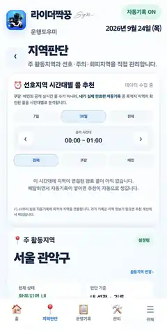
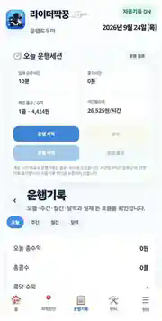
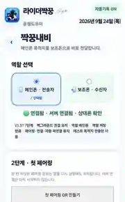

홈
오늘 운행을 한눈에
총수익, 플랫폼별 수익, 운행시간, 시간당수익, 목표 진행률을 한 화면에서 확인합니다.
현재 개발 중인 라이더짝꿍에서 직접 캡처한 실제 화면입니다. 기능별 상세 화면은 계속 추가합니다.
총수익, 플랫폼별 수익, 운행시간, 시간당수익, 목표 진행률을 한 화면에서 확인합니다.

활동지역과 선호·주의·회피 설정, 배달 목적지 자동판단 정보를 운행 중 확인합니다.

운행세션과 일·주·월 기록, 수익 흐름, 자동기록 내역을 관리합니다.

메인폰·보조폰 역할 선택과 연결 상태를 확인하고 목적지 전송을 준비합니다.
앱과 기능을 구분해 처음 방문한 사람도 바로 이해할 수 있게 정리했습니다.
음식배달, 카카오퀵, 일반 퀵서비스, 정책·안전 소식을 카테고리별로 정리합니다.
배민·쿠팡이츠 등 음식배달과 카카오T퀵, 일반 퀵서비스 관련 변화를 정리합니다.
라이더에게 실제 영향을 줄 수 있는 제도, 안전, 도로 관련 정보를 출처와 날짜와 함께 제공합니다.
개발 진행 버전과 공개 배포 버전은 다를 수 있습니다. 아래는 현재 공개 배포본입니다.